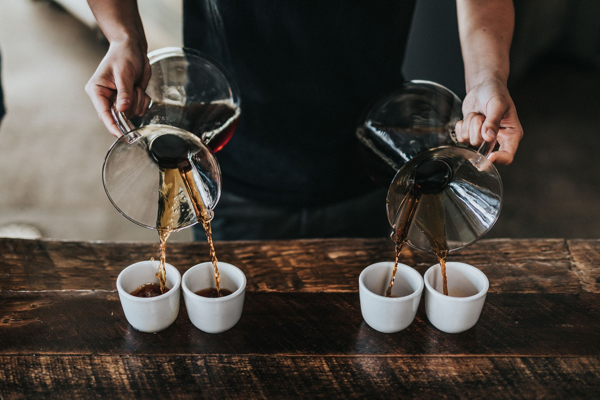

- 
Somos una empresa familiar distribuidora de Café 100% Salvadoreño de muy alta calidad. Poco a poco, con trabajo y un profundo respeto a nuestros clientes hemos ido creciendo hasta llegar al nivel de ser una empresa internacional El café se introdujo en El Salvador entre 1779 y 1796. Según diversos historiadores en ese periodo se localizaron los primeros cafetos en unos terrenos de dos campesinos de Ahuachapán. No fue, sin embargo, hasta mediados del siguiente siglo que se dictaron algunas medidas para favorecer la siembra del café en el país. Este fue el caso, por ejemplo, de un Decreto de 1846, en el que se establecía que “todos los agricultores que se dediquen al cultivo del café y tengan su parcela en altitudes superiores a los 5.000 pies (1.500 m.) de altura sobre el nivel del mar, quedan exceptuados por diez años de cargos concejiles”.
El Salvador produce solamente café Arábica. Las principales variedades cultivadas son Bourbon- 68% del área total de cafetale y Pacas, la variedad salvadoreña proveniente de una mutación natural del Bourbon - 29% de los cafetales-. Además, también se produce algunas cantidades de Pacamara (híbrido salvadoreño resultante del cruce entre Pacas y Maragogipe, con excelentes propiedades de taza) y de otras variedades, en mucha menor cuantía, como Caturra, Catuai y Tekisic (café de origen, también salvadoreño con grandes resultados en taza). Juntas representan el 3% restante de cafetales activos en el país.